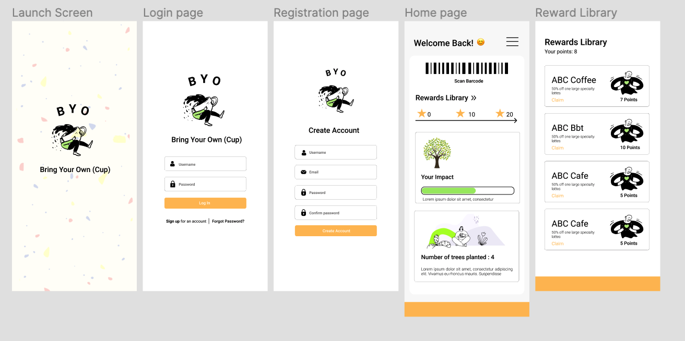
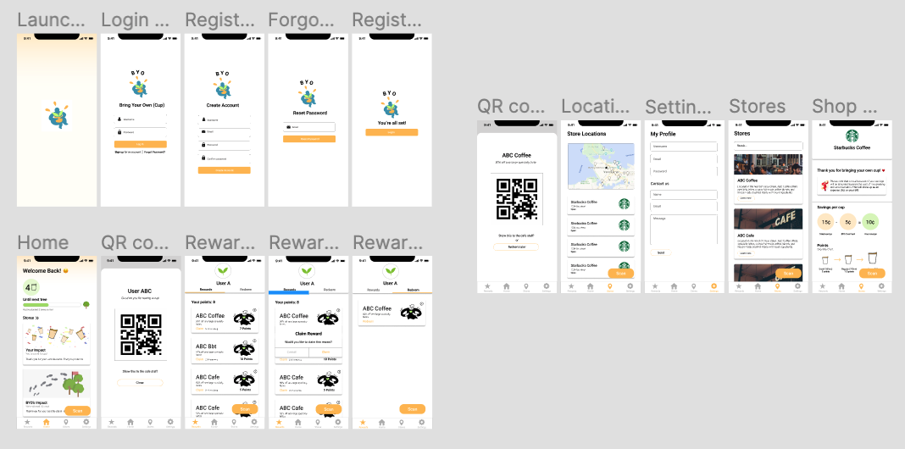
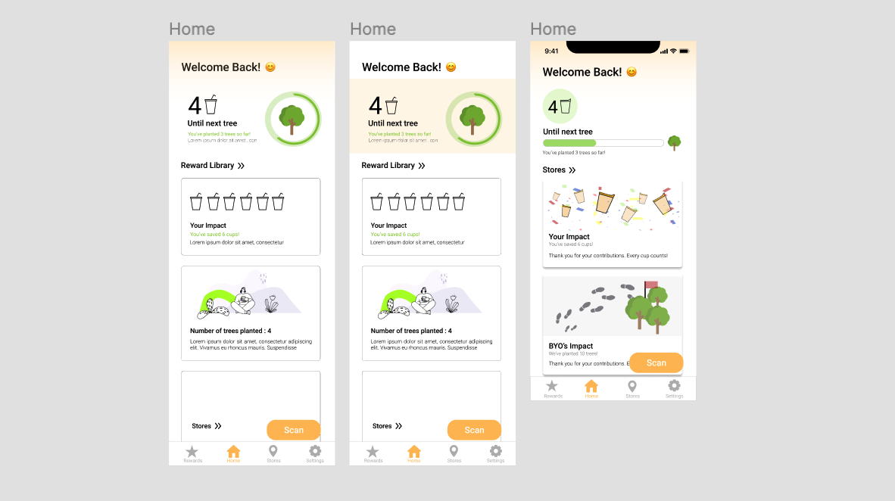
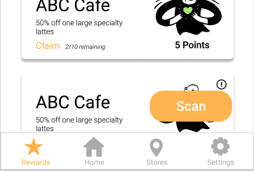
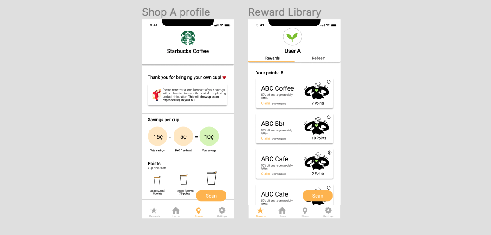

Overview
BYO is a student-led passion project that aims to reduce disposable cup waste in Metro Vancouver. The founder of BYO came to the SFU Surge club with this project idea in mind- to prototype and develop an app from scratch where users can get a small discount and collect points each time they bring their own cup to participation stores, to then be able to plant trees for each cup saved.
Target audience
Metro Vancouverites who sometimes/often buy to-go drinks and are interested in taking small steps towards sustainability.
Prototype 1
For the first prototype, I focused on implementing the important features, exploring some layout structures and selecting a colour palette for the app.

Prototype 2
For the second prototype, I focused on creating a more sophisticated design while considering some important UX aspects. The third prototype is still a work in progress and the app will launch after re-iterating a workable prototype.

Layout explorations
Brainstorming the layout of the home screen was the most challenging part of this project. My team wanted to put emphasis on displaying the user's meaningful impact on reducing waste through graphics. Although this is still a work-in-progress, my team will continue to explore different ways to emphasize the "feel good" aspect of reducing disposable cup waste.

Key features
Some of the key features include the floating scan button which is accessible on every page of the app as well as the rewards page which allows users to redeem or claim points.

Challenges
Another challenge was trying to figure out the user flow in the initial stages of the protoype without actually doing
formal user testing. As our app may be confusing, especially for first-time users, it was really important to consider accessibility for the next iteration, making sure that users could easily understand how to navigate through the app.
Implementing profiles
Implementing shop profiles was important for users to understand the unique shop policies and discounts per cup/ cup size which varies from store to store. We also implemented user profiles gives users a more personalized experience and give users the options to claim and redeem their rewards separately.

Future explorations
For the final prototype, I plan on conducting user testing as well as implementing a little graphical guide after the launch screen which demonstrates how to use the app to first time users. The login process may be moved back in the order of presentation as it may be a potential barrier for users to access the content of the app right away when launching the app.